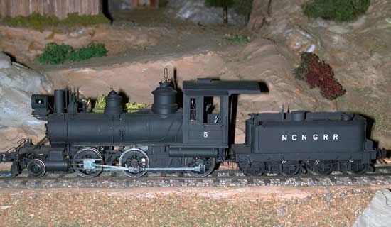

EXPLORE THE RAILROAD
Take the history home.
Discover our layout, photos, railroad history and upcoming public openings.
Scan to explorencngmodelrailroad.org
Questions? Ask a volunteer here at the layout.

EXPLORE THE RAILROAD
Discover our layout, photos, railroad history and upcoming public openings.
Questions? Ask a volunteer here at the layout.